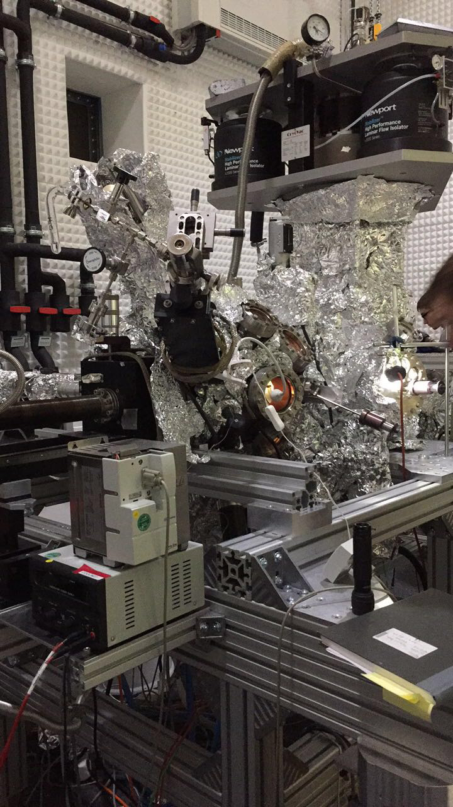
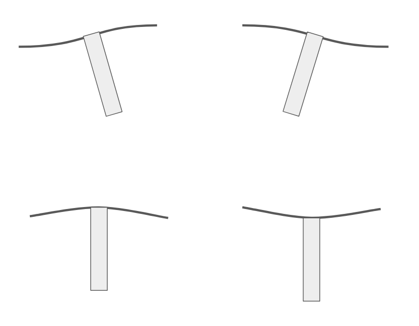
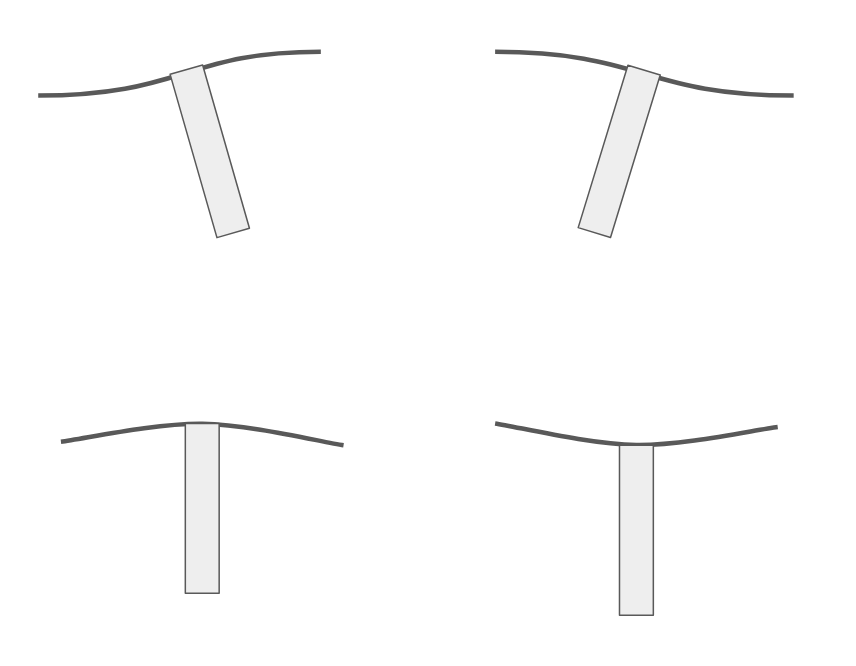
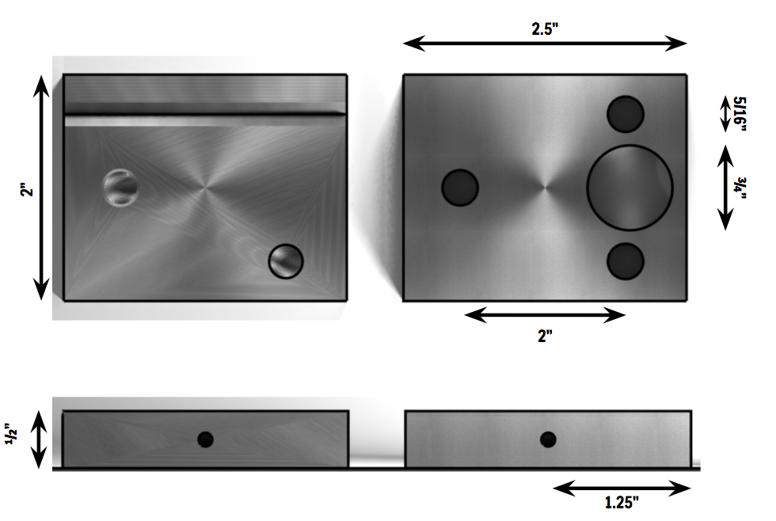
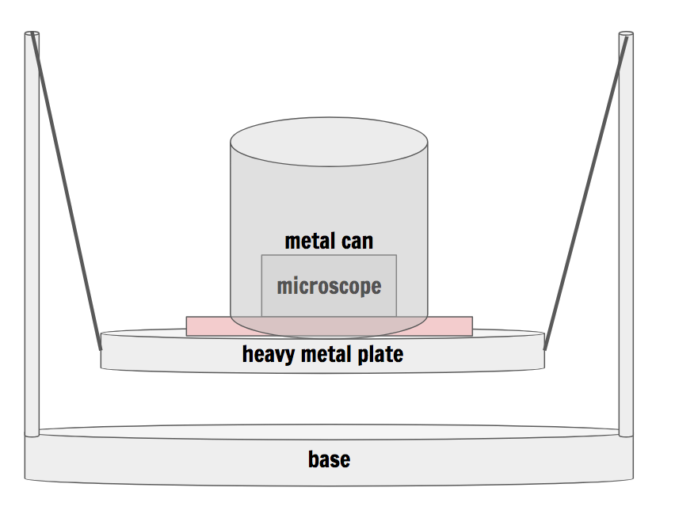

Scanning Tunneling Microscope
28.12.2017
During my semester in Germany of Spring 2017, I had the opportunity to take a class on Advanced Experimental Methods in Materials Science at the Max Planck Institut für Festkörperforschung in Stuttgart. There we discussed various microscopy techniques like Atomic Force Microscopy (AFM) and Scanning Tunneling Microscopy (STM), and we were fortunate enough to use some physical machines in their advanced lab (STM pictured to the right).
I was immediately hooked on STMs - any microscope with atomic resolution is awesome to begin with, but I was fascinated by the simplicity. After talking briefly with the professor, he suggested that I take the time to design and build my own microscope, using parts available to the average hobbyist. The first step was to understand exactly how an STM works.
I like this gif for explaining how an STM works, but here is my additional input: very loosely put, an STM works by bringing an atomically sharp tip (having only one atom at the tip) very very close to the surface we want to examine. A voltage bias is induced between the sample and the tip, such that electrons break off from the surface and tunnel up to the tip. We can measure the amount of current coming from the tip, and the tunneling current increases exponentially with tip distance. The microscope “drags” the tip across the surface we’re scanning and so as the tip gets close to an atom, the tunneling current increases. Since we know where the tip is located and the tunneling current at that point, we can use that information to build an image of what the surface looks like. An STM can also operate in “constant current mode” where the tip moves along the z-axis to try and maintain a constant current coming off of the sample. This is sometimes advantageous as it makes it harder for the tip to crash into things.
The Scanner Head
The scanner head is based on John Alexander’s low cost STM design which features a piezo-electric buzzer to control the movement of the tip. The buzzer is separated into four quadrants and the scanner tip is mounted at the intersection. By feeding a set of combined control signals to different buzzer quadrants, we can control how the tip moves.
 

The tip itself is formed from a tungsten wire (which can be purchased from amazon) and chemically etched to be atomically sharp. The tungsten wire is mounted inside of a standard I2C pin, which is superglued to an empty pen cartridge (since plastic is non-conductive) and cut down to size. Pretty low tech, but simple.
The Physical Microscope
The microscope body is composed of two 2” x 2.5” x 1/2” aluminum blocks, with a large hole bored through the top block, where the piezo and scanner tip can be attached. For the course approach, there are three holes bored for ultra-fine pitch screws (and associated brushings). The two front holes (those closest to the scanner head) allow for bringing the scanner tip visually close to the sample surface, likely with the aid of a magnifying glass. The rear screw is offset to allow for fine approach, with a light indicating when tunneling current has been established. This rear screw could be motorized, but I am both cheap and lazy.
The sample we are examining needs to be isolated from the body of the microscope to avoid picking up stray currents, so we attached it to something with very high resistance like a piece of glass. The sample is attached to a plate of copper (so that we can induce the bias) with copper tape, which is then mounted on the glass, which is in turn glued to the body. This would make it slightly difficult to change samples, but I don’t imagine changing samples very often for a project like this. Finally, two springs attach the top plate to the bottom plate to ensure an accurate measurement. The assembly process for the microscope might look something like this:

Electronics
For this project, I took a lot of inspiration from Dan Berard and his STM design. I certainly do not have a degree in Electrial Engineering and cannot begin to describe the complexities of signal processing that go into STM design, so for the electronics, I used Dan's designs. He does an excellent job of explaining why he made the decisions he did and provides great resources. I went through and sourced the parts that he used to make his circuit so that less experienced people like me could still build an STM at home and feel confident in what they were ordering.
Error Reduction
Obviously a machine that measures a few electrons at a time is highly susceptible to noise and other errors. Most lab STMs are run in a vacuum and at extremely low temperatures. I have neither at my disposal, so it is imperative that I take as many precautions as possible to generate acceptable (and accurate) images.
Firstly, we remove electromagnetic noise, such as 60Hz noise. This is easily accomplished with a Faraday cage, and since I am cheap and lazy, a large soup can makes an excellent Faraday cage. Then vibration: the STM will be mounted on a sheet of polyethylene foam, which is not only an excellent dampener, but also an effective insulator. Just to be absolutely positive, we suspend a heavy metal plate from 3 high-stiffness springs, to reduce low frequency oscillations. This entire contraption is placed inside a soundproof box to further minimize air vibrations. It is also imperative that the power supply is electromagnetically shielded from the main circuit, to prevent other interference.
Bill of Materials
While I was working on this project, one of my biggest complaints about other people's designs was that they never gave exact products and prices. I find this ridiculous and have provided a thorough bill of materials for my STM.
| Item | Quantity | (Total) Cost | Size | Purpose | Source |
|---|---|---|---|---|---|
| Piezoelectric Buzzer | 1 | $0.61 | 20mm | Scanner | DigiKey | Tungsten Wire | 1 | $12.95 | .25mm x 4.88m | Scanning Tip | Amazon |
| Aluminum Bar | 1 | $6.43 | 0.5"x2"x10" | Microscope Body | Online Metals |
| Ultra-Fine Screw Brushing | 3 | $24.87 | 1/4"-80 | Course Approach | McMaster Carr |
| Ultra-Fine Pitch Screws | 3 | $24.51 | 1/4"-80 | Course Approach | McMaster Carr |
| Copper Tape | 1 | $5.99 | 1/4"x22yrds | Sample Mounting | Amazon |
| Polyethelane Sheeting | 1 | $3.23 | 12"x12" | Vibration Isolation | McMaster Carr |
| Steel Rounds | 3 | $4.50 | 5" diameter | Vibration Isolation | Walmart |
| Extension Springs | 3 | $15.27 | 10"lg | Vibration Isolation | McMaster Carr |
| Extension Springs | 2 | $7.55 | 1/2" | Microscope Body | McMaster Carr |
| PCB | 1 | $44.95 | 8cm x 8cm | Circuit Board | DirtyPCB |
The electronics parts list is available here as a pdf.
Including shipping, the total cost of the entire project is $236.18, which I think is an excellent price for such a nifty piece of technology. Unfortunately, as a broke college student, I did not have the funds to build the physical item, but figured that it would be beneficial to post the results of my labor anyways. If you do happen to build an STM, I would love to hear about it!